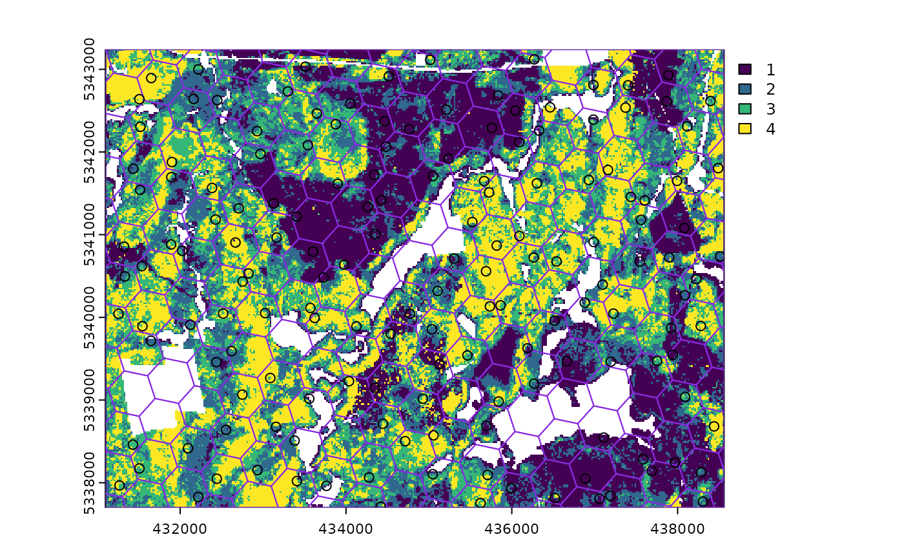

Currently, there are 9 functions associated with the
sample verb in the sgsR package:
| Algorithm | Description | Reference |
|---|---|---|
sample_srs() |
Simple random | |
sample_systematic() |
Systematic | |
sample_strat() |
Stratified | Queinnec, White, & Coops (2021) |
sample_sys_strat() |
Systematic Stratified | |
sample_nc() |
Nearest centroid | Melville & Stone (2016) |
sample_clhs() |
Conditioned Latin hypercube | Minasny & McBratney (2006) |
sample_balanced() |
Balanced sampling | Grafström, A. Lisic, J (2018) |
sample_ahels() |
Adapted hypercube evaluation of a legacy sample | Malone, Minasny, & Brungard (2019) |
sample_existing() |
Sub-sampling an existing sample |
sample_srs
We have demonstrated a simple example of using the
sample_srs() function in vignette("sgsR"). We
will demonstrate additional examples below.
raster
The input required for sample_srs() is a
raster. This means that sraster and
mraster are supported for this function.
#--- perform simple random sampling ---#
sample_srs(
raster = sraster, # input sraster
nSamp = 200, # number of desired sample units
plot = TRUE
) # plot
#> Simple feature collection with 200 features and 0 fields
#> Geometry type: POINT
#> Dimension: XY
#> Bounding box: xmin: 431150 ymin: 5337750 xmax: 438450 ymax: 5343210
#> Projected CRS: UTM Zone 17, Northern Hemisphere
#> First 10 features:
#> geometry
#> 1 POINT (432430 5342550)
#> 2 POINT (434250 5341230)
#> 3 POINT (432610 5341830)
#> 4 POINT (431690 5342950)
#> 5 POINT (437090 5339810)
#> 6 POINT (435410 5343210)
#> 7 POINT (435030 5338250)
#> 8 POINT (433410 5339010)
#> 9 POINT (433750 5339450)
#> 10 POINT (431390 5339650)
sample_srs(
raster = mraster, # input mraster
nSamp = 200, # number of desired sample units
access = access, # define access road network
mindist = 200, # minimum distance sample units must be apart from one another
buff_inner = 50, # inner buffer - no sample units within this distance from road
buff_outer = 200, # outer buffer - no sample units further than this distance from road
plot = TRUE
) # plot
#> Simple feature collection with 200 features and 0 fields
#> Geometry type: POINT
#> Dimension: XY
#> Bounding box: xmin: 431190 ymin: 5337730 xmax: 438450 ymax: 5343230
#> Projected CRS: UTM Zone 17, Northern Hemisphere
#> First 10 features:
#> geometry
#> 1 POINT (434470 5341650)
#> 2 POINT (433850 5341710)
#> 3 POINT (431650 5340750)
#> 4 POINT (434990 5342610)
#> 5 POINT (432590 5340670)
#> 6 POINT (432570 5338730)
#> 7 POINT (438190 5339790)
#> 8 POINT (437530 5343210)
#> 9 POINT (436850 5338170)
#> 10 POINT (434370 5337930)
sample_systematic
The sample_systematic() function applies systematic
sampling across an area with the cellsize parameter
defining the resolution of the tessellation. The tessellation shape can
be modified using the square parameter. Assigning
TRUE (default) to the square parameter results
in a regular grid and assigning FALSE results in a
hexagonal grid.
The location of sample units can also be adjusted using the
locations parameter, where centers takes the
center, corners takes all corners, and random
takes a random location within each tessellation. Random start points
and translations are applied when the function is called.
#--- perform grid sampling ---#
sample_systematic(
raster = sraster, # input sraster
cellsize = 1000, # grid distance
plot = TRUE
) # plot
#> Simple feature collection with 35 features and 0 fields
#> Geometry type: POINT
#> Dimension: XY
#> Bounding box: xmin: 431171.2 ymin: 5337733 xmax: 438511.2 ymax: 5343187
#> Projected CRS: UTM Zone 17, Northern Hemisphere
#> First 10 features:
#> geometry
#> 1 POINT (431361.1 5338764)
#> 2 POINT (432114.1 5338106)
#> 3 POINT (431266.2 5340176)
#> 4 POINT (432772.1 5338859)
#> 5 POINT (431171.2 5341587)
#> 6 POINT (431924.2 5340928)
#> 7 POINT (432677.2 5340270)
#> 8 POINT (434183.2 5338954)
#> 9 POINT (434936.1 5338296)
#> 10 POINT (431829.3 5342340)
#--- perform grid sampling ---#
sample_systematic(
raster = sraster, # input sraster
cellsize = 500, # grid distance
square = FALSE, # hexagonal tessellation
location = "random", # randomly sample within tessellation
plot = TRUE
) # plot
#> Simple feature collection with 173 features and 0 fields
#> Geometry type: POINT
#> Dimension: XY
#> Bounding box: xmin: 431136 ymin: 5337700 xmax: 438550.2 ymax: 5343182
#> Projected CRS: UTM Zone 17, Northern Hemisphere
#> First 10 features:
#> geometry
#> 1 POINT (431192 5337980)
#> 2 POINT (431590.3 5337926)
#> 3 POINT (431775.2 5338192)
#> 4 POINT (431136 5338974)
#> 5 POINT (432230.7 5338112)
#> 6 POINT (432594.2 5337909)
#> 7 POINT (432139.9 5338586)
#> 8 POINT (431312.3 5339226)
#> 9 POINT (433065 5337948)
#> 10 POINT (432347.5 5338288)
sample_systematic(
raster = sraster, # input sraster
cellsize = 500, # grid distance
access = access, # define access road network
buff_outer = 200, # outer buffer - no sample units further than this distance from road
square = FALSE, # hexagonal tessellation
location = "corners", # take corners instead of centers
plot = TRUE
)
#> Simple feature collection with 614 features and 0 fields
#> Geometry type: POINT
#> Dimension: XY
#> Bounding box: xmin: 431167.2 ymin: 5337703 xmax: 438554.5 ymax: 5343232
#> Projected CRS: UTM Zone 17, Northern Hemisphere
#> First 10 features:
#> geometry
#> 1 POINT (432013.1 5343120)
#> 2 POINT (433166.9 5343165)
#> 3 POINT (432878.4 5343153)
#> 4 POINT (434032.2 5343199)
#> 5 POINT (433743.8 5343187)
#> 6 POINT (434897.6 5343232)
#> 7 POINT (434609.2 5343221)
#> 8 POINT (432013.1 5343120)
#> 9 POINT (431878.6 5342864)
#> 10 POINT (432878.4 5343153)
sample_strat
The sample_strat() contains two methods to
perform sampling:
"Queinnec"- Hierarchical sampling using a focal window to isolate contiguous groups of stratum pixels, which was originally developed by Martin Queinnec."random"- Traditional stratified random sampling. Thismethodignores much of the functionality of the algorithm to allow users the capability to use standard stratified random sampling approaches without the use of a focal window to locate contiguous stratum cells.
method = "Queinnec"
Queinnec, M., White, J. C., & Coops, N. C. (2021). Comparing airborne and spaceborne photon-counting LiDAR canopy structural estimates across different boreal forest types. Remote Sensing of Environment, 262(August 2020), 112510.
This algorithm uses moving window (wrow and
wcol parameters) to filter the input sraster
to prioritize sample unit allocation to where stratum pixels are
spatially grouped, rather than dispersed individuals across the
landscape.
Sampling is performed using 2 rules:
Rule 1 - Sample within spatially grouped stratum pixels. Moving window defined by
wrowandwcol.Rule 2 - If no additional sample units exist to satisfy desired sample size(
nSamp), individual stratum pixels are sampled.
The rule applied to a select each sample unit is defined in the
rule attribute of output samples. We give a few examples
below:
#--- perform stratified sampling random sampling ---#
sample_strat(
sraster = sraster, # input sraster
nSamp = 200
) # desired sample size # plot
#> Simple feature collection with 200 features and 3 fields
#> Geometry type: POINT
#> Dimension: XY
#> Bounding box: xmin: 431170 ymin: 5337750 xmax: 438530 ymax: 5343210
#> Projected CRS: UTM Zone 17, Northern Hemisphere
#> First 10 features:
#> strata type rule geometry
#> x 1 new rule1 POINT (437790 5339150)
#> x1 1 new rule1 POINT (431170 5340530)
#> x2 1 new rule1 POINT (436730 5338230)
#> x3 1 new rule1 POINT (436370 5338090)
#> x4 1 new rule1 POINT (434650 5341930)
#> x5 1 new rule1 POINT (435490 5342570)
#> x6 1 new rule1 POINT (435710 5342370)
#> x7 1 new rule1 POINT (433690 5341470)
#> x8 1 new rule1 POINT (433150 5341670)
#> x9 1 new rule1 POINT (434410 5342430)In some cases, users might want to include an existing
sample within the algorithm. In order to adjust the total number of
sample units needed per stratum to reflect those already present in
existing, we can use the intermediate function
extract_strata().
This function uses the sraster and existing
sample units and extracts the stratum for each. These sample units can
be included within sample_strat(), which adjusts total
sample units required per class based on representation in
existing.
#--- extract strata values to existing samples ---#
e.sr <- extract_strata(
sraster = sraster, # input sraster
existing = existing
) # existing samples to add strata value toTIP!
sample_strat() requires the sraster input
to have an attribute named strata and will give an error if
it doesn’t.
sample_strat(
sraster = sraster, # input sraster
nSamp = 200, # desired sample size
access = access, # define access road network
existing = e.sr, # existing sample with strata values
mindist = 200, # minimum distance sample units must be apart from one another
buff_inner = 50, # inner buffer - no sample units within this distance from road
buff_outer = 200, # outer buffer - no sample units further than this distance from road
plot = TRUE
) # plot
#> Simple feature collection with 400 features and 3 fields
#> Geometry type: POINT
#> Dimension: XY
#> Bounding box: xmin: 431150 ymin: 5337710 xmax: 438530 ymax: 5343230
#> Projected CRS: UTM Zone 17, Northern Hemisphere
#> First 10 features:
#> strata type rule geometry
#> 1 1 existing existing POINT (434850 5341630)
#> 2 1 existing existing POINT (436650 5339210)
#> 3 1 existing existing POINT (437530 5342610)
#> 4 1 existing existing POINT (437750 5341110)
#> 5 1 existing existing POINT (435370 5342210)
#> 6 1 existing existing POINT (437990 5340830)
#> 7 1 existing existing POINT (433510 5341150)
#> 8 1 existing existing POINT (435910 5339310)
#> 9 1 existing existing POINT (434710 5341270)
#> 10 1 existing existing POINT (432930 5343030)The code in the example above defined the mindist
parameter, which specifies the minimum euclidean distance that new
sample units must be apart from one another.
Notice that the sample units have type and
rule attributes which outline whether they are
existing or new, and whether
rule1 or rule2 were used to select them. If
type is existing (a user provided
existing sample), rule will be
existing as well as seen above.
sample_strat(
sraster = sraster, # input
nSamp = 200, # desired sample size
access = access, # define access road network
existing = e.sr, # existing samples with strata values
include = TRUE, # include existing sample in nSamp total
buff_outer = 200, # outer buffer - no samples further than this distance from road
plot = TRUE
) # plot
#> Simple feature collection with 200 features and 3 fields
#> Geometry type: POINT
#> Dimension: XY
#> Bounding box: xmin: 431170 ymin: 5337770 xmax: 438530 ymax: 5343210
#> Projected CRS: UTM Zone 17, Northern Hemisphere
#> First 10 features:
#> strata type rule geometry
#> 1 1 existing existing POINT (434850 5341630)
#> 2 1 existing existing POINT (436650 5339210)
#> 3 1 existing existing POINT (437530 5342610)
#> 4 1 existing existing POINT (437750 5341110)
#> 5 1 existing existing POINT (435370 5342210)
#> 6 1 existing existing POINT (437990 5340830)
#> 7 1 existing existing POINT (433510 5341150)
#> 8 1 existing existing POINT (435910 5339310)
#> 9 1 existing existing POINT (434710 5341270)
#> 10 1 existing existing POINT (432930 5343030)The include parameter determines whether
existing sample units should be included in the total
sample size defined by nSamp. By default, the
include parameter is set as FALSE.
method = "random
Stratified random sampling with equal probability for all cells
(using default algorithm values for mindist and no use of
access functionality). In essence this method perform the
sample_srs algorithm for each stratum separately to meet
the specified sample size.
#--- perform stratified sampling random sampling ---#
sample_strat(
sraster = sraster, # input sraster
method = "random", # stratified random sampling
nSamp = 200, # desired sample size
plot = TRUE
) # plot
#> Simple feature collection with 200 features and 2 fields
#> Geometry type: POINT
#> Dimension: XY
#> Bounding box: xmin: 431150 ymin: 5337730 xmax: 438550 ymax: 5343230
#> Projected CRS: UTM Zone 17, Northern Hemisphere
#> First 10 features:
#> strata type geometry
#> x 1 new POINT (433010 5343030)
#> x1 1 new POINT (432990 5341770)
#> x2 1 new POINT (437490 5338430)
#> x3 1 new POINT (436850 5337810)
#> x4 1 new POINT (435770 5339290)
#> x5 1 new POINT (435110 5339090)
#> x6 1 new POINT (435650 5342610)
#> x7 1 new POINT (433570 5338210)
#> x8 1 new POINT (435390 5342790)
#> x9 1 new POINT (435710 5339530)
sample_sys_strat
sample_sys_strat() function implements systematic
stratified sampling on an sraster. This function uses the
same functionality as sample_systematic() but takes an
sraster as input and performs sampling on each stratum
iteratively.
#--- perform grid sampling on each stratum separately ---#
sample_sys_strat(
sraster = sraster, # input sraster with 4 strata
cellsize = 1000, # grid size
plot = TRUE # plot output
)
#> Warning: [readStart] source already open for reading
#> Processing strata : 1
#> Warning: [extract] source already open for reading
#> Processing strata : 2
#> Warning: [extract] source already open for reading
#> Processing strata : 3
#> Warning: [extract] source already open for reading
#> Processing strata : 4
#> Warning: [extract] source already open for reading
#> Simple feature collection with 42 features and 1 field
#> Geometry type: POINT
#> Dimension: XY
#> Bounding box: xmin: 431242.4 ymin: 5337717 xmax: 438239.7 ymax: 5343162
#> Projected CRS: UTM Zone 17, Northern Hemisphere
#> First 10 features:
#> strata geometry
#> 1 1 POINT (434355.6 5340000)
#> 2 1 POINT (434664 5339049)
#> 3 1 POINT (434381.7 5343162)
#> 4 1 POINT (434690.1 5342211)
#> 5 1 POINT (435615.2 5339357)
#> 6 1 POINT (435923.6 5338406)
#> 7 1 POINT (435641.3 5342519)
#> 8 1 POINT (436566.5 5339665)
#> 9 1 POINT (437183.3 5337763)
#> 10 1 POINT (437826.2 5339023)Just like with sample_systematic() we can specify where
we want our samples to fall within our tessellations. We specify
location = "corners" below. Note that the tesselations are
all saved to a list file when details = TRUE should the
user want to save them.
sample_sys_strat(
sraster = sraster, # input sraster with 4 strata
cellsize = 500, # grid size
square = FALSE, # hexagon tessellation
location = "corners", # samples on tessellation corners
plot = TRUE # plot output
)
#> Processing strata : 1
#> Warning: [extract] source already open for reading
#> Processing strata : 2
#> Warning: [extract] source already open for reading
#> Processing strata : 3
#> Warning: [extract] source already open for reading
#> Processing strata : 4
#> Warning: [extract] source already open for reading
#> Simple feature collection with 1210 features and 1 field
#> Geometry type: POINT
#> Dimension: XY
#> Bounding box: xmin: 431111.9 ymin: 5337743 xmax: 438533 ymax: 5343239
#> Projected CRS: UTM Zone 17, Northern Hemisphere
#> First 10 features:
#> strata geometry
#> 1 1 POINT (438464 5337753)
#> 2 1 POINT (438464 5337753)
#> 3 1 POINT (438430.2 5338039)
#> 4 1 POINT (438430.2 5338039)
#> 5 1 POINT (438464 5337753)
#> 6 1 POINT (438430.2 5338039)
#> 7 1 POINT (438430.2 5338039)
#> 8 1 POINT (438131.2 5338440)
#> 9 1 POINT (437437.1 5337922)
#> 10 1 POINT (437668.5 5338095)This sampling approach could be especially useful incombination with
strat_poly() to ensure consistency of sampling accross
specific management units.
#--- read polygon coverage ---#
poly <- system.file("extdata", "inventory_polygons.shp", package = "sgsR")
fri <- sf::st_read(poly)
#> Reading layer `inventory_polygons' from data source
#> `/home/runner/work/_temp/Library/sgsR/extdata/inventory_polygons.shp'
#> using driver `ESRI Shapefile'
#> Simple feature collection with 632 features and 3 fields
#> Geometry type: MULTIPOLYGON
#> Dimension: XY
#> Bounding box: xmin: 431100 ymin: 5337700 xmax: 438560 ymax: 5343240
#> Projected CRS: UTM_Zone_17_Northern_Hemisphere
#--- stratify polygon coverage ---#
#--- specify polygon attribute to stratify ---#
attribute <- "NUTRIENTS"
#--- specify features within attribute & how they should be grouped ---#
#--- as a single vector ---#
features <- c("poor", "rich", "medium")
#--- get polygon stratification ---#
srasterpoly <- strat_poly(
poly = fri,
attribute = attribute,
features = features,
raster = sraster
)
#--- systematatic stratified sampling for each stratum ---#
sample_sys_strat(
sraster = srasterpoly, # input sraster from strat_poly() with 3 strata
cellsize = 500, # grid size
square = FALSE, # hexagon tessellation
location = "random", # randomize plot location
plot = TRUE # plot output
)
#> Processing strata : 1
#> Warning: [extract] source already open for reading
#> Processing strata : 2
#> Warning: [extract] source already open for reading
#> Processing strata : 3
#> Warning: [extract] source already open for reading
#> Simple feature collection with 170 features and 1 field
#> Geometry type: POINT
#> Dimension: XY
#> Bounding box: xmin: 431110.1 ymin: 5337769 xmax: 438517.8 ymax: 5343237
#> Projected CRS: UTM Zone 17, Northern Hemisphere
#> First 10 features:
#> strata geometry
#> 1 1 POINT (438404.8 5343235)
#> 2 1 POINT (438389.6 5342714)
#> 3 1 POINT (437697.1 5342677)
#> 4 1 POINT (438064.9 5342413)
#> 5 1 POINT (435882 5343237)
#> 6 1 POINT (437514.6 5341129)
#> 7 1 POINT (438096.2 5340560)
#> 8 1 POINT (435151.2 5342825)
#> 9 1 POINT (435727 5342195)
#> 10 1 POINT (436698 5341126)
sample_nc
sample_nc() function implements the Nearest Centroid
sampling algorithm described in Melville &
Stone (2016). The algorithm uses kmeans clustering where the number
of clusters (centroids) is equal to the desired sample size
(nSamp).
Cluster centers are located, which then prompts the nearest neighbour
mraster pixel for each cluster to be selected (assuming
default k parameter). These nearest neighbours are the
output sample units.
#--- perform simple random sampling ---#
sample_nc(
mraster = mraster, # input
nSamp = 25, # desired sample size
plot = TRUE
)
#> K-means being performed on 3 layers with 25 centers.
#> Simple feature collection with 25 features and 4 fields
#> Geometry type: POINT
#> Dimension: XY
#> Bounding box: xmin: 431230 ymin: 5337770 xmax: 438110 ymax: 5343130
#> Projected CRS: UTM Zone 17, Northern Hemisphere
#> First 10 features:
#> zq90 pzabove2 zsd kcenter geometry
#> 2176 26.7 89.3 8.44 1 POINT (437310 5343130)
#> 36188 13.0 73.5 3.33 2 POINT (431230 5341290)
#> 39344 4.8 39.2 1.09 3 POINT (434670 5341130)
#> 77033 10.7 17.2 3.07 4 POINT (434990 5339110)
#> 52434 20.8 22.1 6.89 5 POINT (435370 5340430)
#> 39113 10.7 88.9 2.42 6 POINT (437510 5341150)
#> 5661 10.2 66.6 2.63 7 POINT (432410 5342930)
#> 96050 12.1 49.9 3.36 8 POINT (434870 5338090)
#> 63746 18.5 62.8 5.55 9 POINT (437810 5339830)
#> 9220 20.2 91.8 4.88 10 POINT (436450 5342750)Altering the k parameter leads to a multiplicative
increase in output sample units where total output samples = \(nSamp * k\).
#--- perform simple random sampling ---#
samples <- sample_nc(
mraster = mraster, # input
k = 2, # number of nearest neighbours to take for each kmeans center
nSamp = 25, # desired sample size
plot = TRUE
)
#> K-means being performed on 3 layers with 25 centers.
#--- total samples = nSamp * k (25 * 2) = 50 ---#
nrow(samples)
#> [1] 50Visualizing what the kmeans centers and sample units looks like is
possible when using details = TRUE. The $kplot
output provides a quick visualization of where the centers are based on
a scatter plot of the first 2 layers in mraster. Notice
that the centers are well distributed in covariate space and chosen
sample units are the closest pixels to each center (nearest
neighbours).
#--- perform simple random sampling with details ---#
details <- sample_nc(
mraster = mraster, # input
nSamp = 25, # desired sample number
details = TRUE
)
#> K-means being performed on 3 layers with 25 centers.
#--- plot ggplot output ---#
details$kplot
sample_clhs
sample_clhs() function implements conditioned Latin
hypercube (clhs) sampling methodology from the clhs
package.
TIP!
A number of other functions in the sgsR package help to
provide guidance on clhs sampling including calculate_pop()
and calculate_lhsOpt(). Check out these functions to better
understand how sample numbers could be optimized.
The syntax for this function is similar to others shown above,
although parameters like iter, which define the number of
iterations within the Metropolis-Hastings process are important to
consider. In these examples we use a low iter value for
efficiency. Default values for iter within the
clhs package are 10,000.
sample_clhs(
mraster = mraster, # input
nSamp = 200, # desired sample size
plot = TRUE, # plot
iter = 100
) # number of iterations
The cost parameter defines the mraster
covariate, which is used to constrain the clhs sampling. An example
could be the distance a pixel is from road access
(e.g. from calculate_distance() see example below), terrain
slope, the output from calculate_coobs(), or many
others.
#--- cost constrained examples ---#
#--- calculate distance to access layer for each pixel in mr ---#
mr.c <- calculate_distance(
raster = mraster, # input
access = access, # define access road network
plot = TRUE
) # plot
#>
|---------|---------|---------|---------|
=========================================

sample_clhs(
mraster = mr.c, # input
nSamp = 250, # desired sample size
iter = 100, # number of iterations
cost = "dist2access", # cost parameter - name defined in calculate_distance()
plot = TRUE
) # plot
sample_balanced
The sample_balanced() algorithm performs a balanced
sampling methodology from the stratifyR / SamplingBigData
packages.
sample_balanced(
mraster = mraster, # input
nSamp = 200, # desired sample size
plot = TRUE
) # plot
#> Simple feature collection with 200 features and 0 fields
#> Geometry type: POINT
#> Dimension: XY
#> Bounding box: xmin: 431110 ymin: 5337710 xmax: 438550 ymax: 5343170
#> Projected CRS: +proj=utm +zone=17 +ellps=GRS80 +towgs84=0,0,0,0,0,0,0 +units=m +no_defs
#> First 10 features:
#> geometry
#> 1 POINT (437870 5343170)
#> 2 POINT (431110 5343130)
#> 3 POINT (432490 5343110)
#> 4 POINT (437590 5343090)
#> 5 POINT (431590 5342970)
#> 6 POINT (432010 5342970)
#> 7 POINT (434750 5342930)
#> 8 POINT (433350 5342870)
#> 9 POINT (434530 5342870)
#> 10 POINT (435510 5342850)
sample_balanced(
mraster = mraster, # input
nSamp = 100, # desired sample size
algorithm = "lcube", # algorithm type
access = access, # define access road network
buff_inner = 50, # inner buffer - no sample units within this distance from road
buff_outer = 200
) # outer buffer - no sample units further than this distance from road
#> Simple feature collection with 100 features and 0 fields
#> Geometry type: POINT
#> Dimension: XY
#> Bounding box: xmin: 431750 ymin: 5337790 xmax: 438470 ymax: 5343210
#> Projected CRS: +proj=utm +zone=17 +ellps=GRS80 +towgs84=0,0,0,0,0,0,0 +units=m +no_defs
#> First 10 features:
#> geometry
#> 1 POINT (437930 5338610)
#> 2 POINT (432670 5338830)
#> 3 POINT (433250 5342650)
#> 4 POINT (435010 5342610)
#> 5 POINT (432550 5340890)
#> 6 POINT (434130 5342490)
#> 7 POINT (435650 5342470)
#> 8 POINT (432030 5338330)
#> 9 POINT (438470 5339410)
#> 10 POINT (435750 5342110)
sample_ahels
The sample_ahels() function performs the adapted
Hypercube Evaluation of a Legacy Sample (ahels) algorithm
usingexisting sample data and an mraster. New
sample units are allocated based on quantile ratios between the
existing sample and mraster covariate
dataset.
This algorithm was adapted from that presented in the paper below, which we highly recommend.
Malone BP, Minansy B, Brungard C. 2019. Some methods to improve the utility of conditioned Latin hypercube sampling. PeerJ 7:e6451 DOI 10.7717/peerj.6451
This algorithm:
Determines the quantile distributions of
existingsample units andmrastercovariates.Determines quantiles where there is a disparity between sample units and covariates.
Prioritizes sampling within those quantile to improve representation.
To use this function, user must first specify the number of quantiles
(nQuant) followed by either the nSamp (total
number of desired sample units to be added) or the
threshold (sampling ratio vs. covariate coverage ratio for
quantiles - default is 0.9) parameters.
#--- remove `type` variable from existing - causes plotting issues ---#
existing <- existing %>% select(-type)
sample_ahels(
mraster = mraster,
existing = existing, # existing sample
plot = TRUE
) # plot#> Simple feature collection with 315 features and 7 fields
#> Geometry type: POINT
#> Dimension: XY
#> Bounding box: xmin: 431130 ymin: 5337770 xmax: 438530 ymax: 5343210
#> Projected CRS: UTM Zone 17, Northern Hemisphere
#> First 10 features:
#> type.x zq90 pzabove2 zsd strata type.y rule
#> 1 existing 3.00 8.6 0.53 1 new rule1
#> 2 existing 9.19 39.3 2.59 1 new rule1
#> 3 existing 3.17 13.5 0.57 1 new rule1
#> 4 existing 8.16 70.9 1.74 1 new rule1
#> 5 existing 3.92 18.7 0.87 1 new rule1
#> 6 existing 7.68 80.3 1.58 1 new rule1
#> 7 existing 9.73 21.1 2.73 1 new rule1
#> 8 existing 7.92 37.5 1.93 1 new rule1
#> 9 existing 3.79 41.9 0.75 1 new rule1
#> 10 existing 5.83 86.8 1.23 1 new rule1
#> geometry
#> 1 POINT (434850 5341630)
#> 2 POINT (436650 5339210)
#> 3 POINT (437530 5342610)
#> 4 POINT (437750 5341110)
#> 5 POINT (435370 5342210)
#> 6 POINT (437990 5340830)
#> 7 POINT (433510 5341150)
#> 8 POINT (435910 5339310)
#> 9 POINT (434710 5341270)
#> 10 POINT (432930 5343030)TIP!
Notice that no threshold, nSamp, or
nQuant were defined. That is because the default setting
for threshold = 0.9 and nQuant = 10.
The first matrix output shows the quantile ratios between the sample and the covariates. A value of 1.0 indicates that the sample is representative of quantile coverage. Values > 1.0 indicate over representation of sample units, while < 1.0 indicate under representation.
sample_ahels(
mraster = mraster,
existing = existing, # existing sample
nQuant = 20, # define 20 quantiles
nSamp = 300
) # desired sample size#> Simple feature collection with 500 features and 7 fields
#> Geometry type: POINT
#> Dimension: XY
#> Bounding box: xmin: 431170 ymin: 5337710 xmax: 438530 ymax: 5343210
#> Projected CRS: UTM Zone 17, Northern Hemisphere
#> First 10 features:
#> type.x zq90 pzabove2 zsd strata type.y rule
#> 1 existing 3.00 8.6 0.53 1 new rule1
#> 2 existing 9.19 39.3 2.59 1 new rule1
#> 3 existing 3.17 13.5 0.57 1 new rule1
#> 4 existing 8.16 70.9 1.74 1 new rule1
#> 5 existing 3.92 18.7 0.87 1 new rule1
#> 6 existing 7.68 80.3 1.58 1 new rule1
#> 7 existing 9.73 21.1 2.73 1 new rule1
#> 8 existing 7.92 37.5 1.93 1 new rule1
#> 9 existing 3.79 41.9 0.75 1 new rule1
#> 10 existing 5.83 86.8 1.23 1 new rule1
#> geometry
#> 1 POINT (434850 5341630)
#> 2 POINT (436650 5339210)
#> 3 POINT (437530 5342610)
#> 4 POINT (437750 5341110)
#> 5 POINT (435370 5342210)
#> 6 POINT (437990 5340830)
#> 7 POINT (433510 5341150)
#> 8 POINT (435910 5339310)
#> 9 POINT (434710 5341270)
#> 10 POINT (432930 5343030)Notice that the total number of samples is 500. This value is the sum
of existing units (200) and number of sample units defined by
nSamp = 300.
sample_existing
Acknowledging that existing sample networks are common
is important. There is significant investment into these samples, and in
order to keep inventories up-to-date, we often need to collect new data
for sample units. The sample_existing algorithm provides
the user with methods for sub-sampling an existing sample
network should the financial / logistical resources not be available to
collect data at all sample units. The functions allows users to choose
between algorithm types using (type = "clhs" - default,
type = "balanced", type = "srs",
type = "strat"). Differences in type result in calling
internal sample_existing_*() functions
(sample_existing_clhs() (default),
sample_existing_balanced(),
sample_existing_srs(),
sample_existing_strat()). These functions are not exported
to be used stand-alone, however they employ the same functionality as
their sample_clhs() etc counterparts.
While using sample_existing(), should the user wish to
specify algorithm specific parameters
(e.g. algorithm = "lcube" in sample_balanced()
or allocation = "equal" in sample_strat()),
they can specify within sample_existing() as if calling the
function directly.
I give applied examples for all methods below that are based on the following scenario:
We have a systematic sample where sample units are 200m apart.
We know we only have resources to sample 300 of them.
We have some ALS data available (
mraster), which we can use to improve knowledge of the metric populations.
See our existing sample for the scenario below.
#--- generate existing samples and extract metrics ---#
existing <- sample_systematic(raster = mraster, cellsize = 200, plot = TRUE)
#--- sub sample using ---#
e <- existing %>%
extract_metrics(mraster = mraster, existing = .)
sample_existing(type = "clhs")
The algorithm is unique in that it has two fundamental approaches:
- Sample exclusively using
existingand the attributes it contains.
#--- sub sample using ---#
sample_existing(existing = e, nSamp = 300, type = "clhs")
#> Simple feature collection with 300 features and 3 fields
#> Geometry type: POINT
#> Dimension: XY
#> Bounding box: xmin: 431107.6 ymin: 5337722 xmax: 438519.6 ymax: 5343213
#> Projected CRS: UTM Zone 17, Northern Hemisphere
#> First 10 features:
#> zq90 pzabove2 zsd geometry
#> 493 8.47 36.6 2.32 POINT (433828.1 5338606)
#> 54 20.50 96.6 4.14 POINT (431383.6 5341101)
#> 11 0.00 0.0 0.00 POINT (431135.7 5342204)
#> 650 9.31 3.3 2.44 POINT (437730.9 5342526)
#> 79 9.90 54.4 2.52 POINT (432684.5 5342407)
#> 903 22.10 78.2 5.99 POINT (438491.5 5338493)
#> 838 15.60 50.5 4.08 POINT (437798.6 5339642)
#> 721 20.70 85.7 5.42 POINT (437105.8 5340791)
#> 549 12.20 61.8 3.37 POINT (434487 5338899)
#> 627 17.50 79.4 3.76 POINT (436384.9 5340774)- Sub-sampling using
rasterdistributions
Our systematic sample of ~900 plots is fairly comprehensive, however
we can generate a true population distribution through the inclusion of
the ALS metrics in the sampling process. The metrics will be included in
internal latin hypercube sampling to help guide sub-sampling of
existing.
#--- sub sample using ---#
sample_existing(
existing = existing, # our existing sample
nSamp = 300, # desired sample size
raster = mraster, # include mraster metrics to guide sampling of existing
plot = TRUE
) # plot
#> Simple feature collection with 300 features and 3 fields
#> Geometry type: POINT
#> Dimension: XY
#> Bounding box: xmin: 431107.6 ymin: 5337710 xmax: 438547.6 ymax: 5343190
#> Projected CRS: +proj=utm +zone=17 +ellps=GRS80 +towgs84=0,0,0,0,0,0,0 +units=m +no_defs
#> First 10 features:
#> zq90 pzabove2 zsd geometry
#> 91535 6.21 55.7 1.43 POINT (434588.2 5341675)
#> 91975 7.75 84.8 1.69 POINT (437826.7 5340808)
#> 91383 7.59 19.3 1.91 POINT (434064.4 5342717)
#> 91662 9.71 97.0 1.95 POINT (433659.1 5338713)
#> 91207 19.90 82.4 4.78 POINT (431946.7 5343111)
#> 92035 2.01 0.3 0.22 POINT (437584.6 5339304)
#> 91547 22.60 98.9 4.61 POINT (433090.2 5339310)
#> 91834 6.90 8.3 1.70 POINT (435100.9 5338747)
#> 92032 8.57 86.2 1.84 POINT (437905.6 5339811)
#> 91242 22.90 90.3 3.05 POINT (432132.6 5342283)The sample distribution again mimics the population distribution quite well! Now lets try using a cost variable to constrain the sub-sample.
#--- create distance from roads metric ---#
dist <- calculate_distance(raster = mraster, access = access)
#>
|---------|---------|---------|---------|
=========================================
#--- sub sample using ---#
sample_existing(
existing = existing, # our existing sample
nSamp = 300, # desired sample size
raster = dist, # include mraster metrics to guide sampling of existing
cost = 4, # either provide the index (band number) or the name of the cost layer
plot = TRUE
) # plot
#> Simple feature collection with 300 features and 4 fields
#> Geometry type: POINT
#> Dimension: XY
#> Bounding box: xmin: 431169.6 ymin: 5337727 xmax: 438553.4 ymax: 5343235
#> Projected CRS: +proj=utm +zone=17 +ellps=GRS80 +towgs84=0,0,0,0,0,0,0 +units=m +no_defs
#> First 10 features:
#> zq90 pzabove2 zsd dist2access geometry
#> 91570 4.12 74.0 0.75 43.24801 POINT (434329.2 5340892)
#> 91435 10.30 52.6 2.56 21.52114 POINT (434509.3 5342672)
#> 91770 19.70 19.2 6.77 48.82128 POINT (434656 5338792)
#> 91673 20.10 82.9 6.39 693.75968 POINT (435647.1 5341478)
#> 91696 20.20 69.1 4.02 372.41245 POINT (436458 5342385)
#> 92036 8.13 33.0 2.23 56.42361 POINT (437477.6 5339135)
#> 91534 4.31 46.4 0.89 45.23457 POINT (434695.2 5341844)
#> 91924 16.80 57.0 4.89 219.39500 POINT (435500.8 5338257)
#> 92015 15.10 74.4 3.96 241.10148 POINT (437843.7 5340087)
#> 91327 15.30 89.5 3.91 95.71520 POINT (431845.4 5340335)Finally, should the user wish to further constrain the sample based
on access like other sampling approaches in
sgsR that is also possible.
#--- ensure access and existing are in the same CRS ---#
sf::st_crs(existing) <- sf::st_crs(access)
#--- sub sample using ---#
sample_existing(
existing = existing, # our existing sample
nSamp = 300, # desired sample size
raster = dist, # include mraster metrics to guide sampling of existing
cost = 4, # either provide the index (band number) or the name of the cost layer
access = access, # roads layer
buff_inner = 50, # inner buffer - no sample units within this distance from road
buff_outer = 300, # outer buffer - no sample units further than this distance from road
plot = TRUE
) # plot
#> Simple feature collection with 300 features and 4 fields
#> Geometry type: POINT
#> Dimension: XY
#> Bounding box: xmin: 431180.7 ymin: 5337710 xmax: 438547.6 ymax: 5343218
#> Projected CRS: +proj=utm +zone=17 +ellps=GRS80 +towgs84=0,0,0,0,0,0,0 +units=m +no_defs
#> First 10 features:
#> zq90 pzabove2 zsd dist2access geometry
#> 91298 12.1 19.1 3.65 178.42300 POINT (433208.4 5341365)
#> 91546 14.8 72.4 3.68 243.10942 POINT (434565.9 5337902)
#> 91482 17.2 94.3 3.86 84.13032 POINT (434273 5338561)
#> 91527 20.8 93.7 7.14 96.65112 POINT (437347.9 5342295)
#> 91322 17.7 88.0 5.02 101.94361 POINT (431665.3 5338555)
#> 91540 23.2 90.6 4.22 238.09046 POINT (435742.9 5339760)
#> 91396 14.9 93.5 2.89 214.73844 POINT (432127.2 5337789)
#> 91428 11.3 87.3 2.90 88.25764 POINT (435951.1 5342706)
#> 91265 19.8 91.8 4.98 100.18500 POINT (433619.4 5342762)
#> 91647 12.2 94.3 3.04 99.71694 POINT (436897.6 5337845)TIP!
The greater constraints we add to sampling, the less likely we will have strong correlations between the population and sample, so its always important to understand these limitations and plan accordingly.
sample_existing(type = "balanced")
When type = "balanced" users can define all parameters
that are found within sample_balanced(). This means that
one can change the algorithm, p etc.
sample_existing(existing = e, nSamp = 300, type = "balanced")
#> Simple feature collection with 300 features and 3 fields
#> Geometry type: POINT
#> Dimension: XY
#> Bounding box: xmin: 431107.6 ymin: 5337727 xmax: 438558.8 ymax: 5343218
#> Projected CRS: UTM Zone 17, Northern Hemisphere
#> First 10 features:
#> zq90 pzabove2 zsd geometry
#> 3 19.30 89.6 5.10 POINT (431394.7 5342987)
#> 6 17.60 79.3 4.80 POINT (431777.7 5343218)
#> 7 18.80 86.3 4.88 POINT (431670.7 5343049)
#> 10 6.93 5.1 2.12 POINT (431242.7 5342373)
#> 11 0.00 0.0 0.00 POINT (431135.7 5342204)
#> 14 18.40 79.1 4.13 POINT (431732.7 5342773)
#> 17 18.00 95.4 3.04 POINT (431411.7 5342266)
#> 21 12.70 67.7 3.18 POINT (432008.6 5342835)
#> 22 13.20 71.2 3.11 POINT (431901.6 5342666)
#> 32 11.40 71.5 2.58 POINT (432177.6 5342728)
sample_existing(existing = e, nSamp = 300, type = "balanced", algorithm = "lcube")
#> Simple feature collection with 300 features and 3 fields
#> Geometry type: POINT
#> Dimension: XY
#> Bounding box: xmin: 431107.6 ymin: 5337722 xmax: 438553.4 ymax: 5343224
#> Projected CRS: UTM Zone 17, Northern Hemisphere
#> First 10 features:
#> zq90 pzabove2 zsd geometry
#> 498 21.60 90.8 5.800000 POINT (433293.1 5337761)
#> 526 26.60 93.1 9.059999 POINT (437055 5342954)
#> 673 18.10 95.8 4.160000 POINT (435055.9 5338302)
#> 588 10.30 89.7 2.530000 POINT (436964.9 5342064)
#> 500 16.80 96.4 3.750000 POINT (436672 5342723)
#> 610 17.10 95.7 3.070000 POINT (434503.9 5338178)
#> 166 18.60 92.1 3.710000 POINT (433681.4 5342486)
#> 347 4.54 25.8 1.010000 POINT (433839.2 5340492)
#> 820 15.10 74.4 3.960000 POINT (437843.7 5340087)
#> 452 10.10 80.5 2.520000 POINT (435692.1 5341923)
sample_existing(type = "srs")
The simplest, type = srs, randomly selects sample
units.
sample_existing(existing = e, nSamp = 300, type = "srs")
#> Simple feature collection with 300 features and 3 fields
#> Geometry type: POINT
#> Dimension: XY
#> Bounding box: xmin: 431130.3 ymin: 5337710 xmax: 438547.6 ymax: 5343235
#> Projected CRS: UTM Zone 17, Northern Hemisphere
#> First 10 features:
#> zq90 pzabove2 zsd geometry
#> 1 21.70 85.8 5.38 POINT (436001.9 5340543)
#> 2 19.00 91.0 4.75 POINT (437026.9 5341788)
#> 3 2.85 17.4 1.96 POINT (434256.1 5339282)
#> 4 5.91 81.3 1.15 POINT (434712.2 5341123)
#> 5 2.79 13.5 0.49 POINT (434926.2 5341461)
#> 6 17.20 57.4 4.44 POINT (432746.5 5342131)
#> 7 26.30 92.5 6.97 POINT (434042.1 5338944)
#> 8 15.20 78.2 4.08 POINT (435838.8 5338043)
#> 9 14.30 72.8 4.10 POINT (433298.4 5342255)
#> 10 19.00 84.1 5.81 POINT (431456.7 5342711)
sample_existing(type = "strat")
When type = "strat", existing must have an
attribute named strata (just like how
sample_strat() requires a strata layer). If it
doesnt exist you will get an error. Lets define an sraster
so that we are compliant.
sraster <- strat_kmeans(mraster = mraster, nStrata = 4)
e_strata <- extract_strata(sraster = sraster, existing = e)When we do have a strata attribute, the function works very much the
same as sample_strat() in that is allows the user to define
the allocation method ("prop" - defaults,
"optim", "manual", "equal").
#--- proportional stratified sampling of existing ---#
sample_existing(existing = e_strata, nSamp = 300, type = "strat", allocation = "prop")
#> Simple feature collection with 300 features and 4 fields
#> Geometry type: POINT
#> Dimension: XY
#> Bounding box: xmin: 431113.4 ymin: 5337710 xmax: 438536.5 ymax: 5343218
#> Projected CRS: UTM Zone 17, Northern Hemisphere
#> First 10 features:
#> strata zq90 pzabove2 zsd geometry
#> 1 3 19.7 90.3 4.54 POINT (434396.9 5338009)
#> 2 3 17.3 91.1 4.74 POINT (438457.6 5339935)
#> 3 3 16.9 94.8 4.42 POINT (433957.4 5342548)
#> 4 3 13.3 83.8 3.48 POINT (437218.6 5338352)
#> 5 3 15.2 72.7 4.18 POINT (437854.8 5341974)
#> 6 3 17.9 73.8 4.02 POINT (432087.5 5341838)
#> 7 3 17.0 83.3 3.78 POINT (436277.9 5340605)
#> 8 3 15.2 91.3 4.31 POINT (434954.2 5342627)
#> 9 3 17.2 57.4 4.44 POINT (432746.5 5342131)
#> 10 3 16.6 95.0 3.26 POINT (435117.9 5338026)TIP!
Remember that when allocation = "equal", the
nSamp value will be allocated for each strata.
We get 400 sample units in our output below because we have 4 strata
and nSamp = 100.
#--- equal stratified sampling of existing ---#
sample_existing(existing = e_strata, nSamp = 100, type = "strat", allocation = "equal")
#> Simple feature collection with 400 features and 4 fields
#> Geometry type: POINT
#> Dimension: XY
#> Bounding box: xmin: 431130.3 ymin: 5337705 xmax: 438558.8 ymax: 5343235
#> Projected CRS: UTM Zone 17, Northern Hemisphere
#> First 10 features:
#> strata zq90 pzabove2 zsd geometry
#> 1 3 14.5 89.0 3.95 POINT (432487.4 5341348)
#> 2 3 14.2 77.8 3.36 POINT (435613.2 5342920)
#> 3 3 15.8 88.5 3.47 POINT (431873.5 5341500)
#> 4 3 14.2 79.1 3.91 POINT (436396.1 5342661)
#> 5 3 19.2 90.1 4.38 POINT (431839.7 5342942)
#> 6 3 14.3 96.0 2.30 POINT (432431.3 5339017)
#> 7 3 15.3 83.1 4.12 POINT (434999.3 5343072)
#> 8 3 21.1 95.4 3.72 POINT (432966.3 5339862)
#> 9 3 15.9 75.5 3.92 POINT (436660.9 5340836)
#> 10 3 15.5 84.8 4.01 POINT (432493.2 5338741)
#--- manual stratified sampling of existing with user defined weights ---#
s <- sample_existing(existing = e_strata, nSamp = 100, type = "strat", allocation = "manual", weights = c(0.2, 0.6, 0.1, 0.1))We can check the proportion of samples from each strata with:
#--- check proportions match weights ---#
table(s$strata) / 100
#>
#> 1 2 3 4
#> 0.2 0.6 0.1 0.1Finally, type = "optim allows for the user to define a
raster metric to be used to optimize within strata
variances.
#--- manual stratified sampling of existing with user defined weights ---#
sample_existing(existing = e_strata, nSamp = 100, type = "strat", allocation = "optim", raster = mraster, metric = "zq90")
#> Simple feature collection with 100 features and 4 fields
#> Geometry type: POINT
#> Dimension: XY
#> Bounding box: xmin: 431158.4 ymin: 5337722 xmax: 438558.8 ymax: 5343224
#> Projected CRS: UTM Zone 17, Northern Hemisphere
#> First 10 features:
#> strata zq90 pzabove2 zsd geometry
#> 1 3 15.5 91.8 3.49 POINT (431490.6 5341269)
#> 2 3 13.8 92.4 2.76 POINT (437995.7 5340701)
#> 3 3 14.2 88.5 3.88 POINT (433107.2 5338589)
#> 4 3 19.4 89.4 4.29 POINT (435602 5341033)
#> 5 3 16.1 96.9 2.76 POINT (431158.4 5338876)
#> 6 3 18.4 94.3 4.81 POINT (435495 5340864)
#> 7 3 16.5 68.1 4.55 POINT (432825.4 5341134)
#> 8 3 16.9 90.9 4.99 POINT (431513.3 5337941)
#> 9 3 15.3 73.9 3.90 POINT (437640.8 5341636)
#> 10 3 13.8 78.7 3.59 POINT (436345.7 5337722)We see from the output that we get 300 sample units that are a
sub-sample of existing. The plotted output shows cumulative
frequency distributions of the population (all existing
samples) and the sub-sample (the 300 samples we requested).